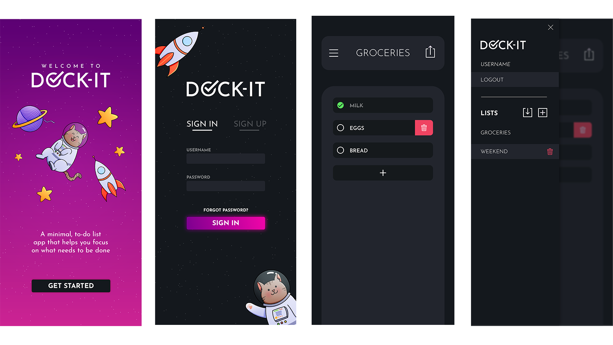

DOCK-IT
A shared list-keeping app that helps you focus on what needs to be done.
UNITY
C#
ANDROID
FIREBASE
UI DESIGN
WIP

Dock-it is a minimal list keeping app that allows you to share your list with friends.
I first had the idea when I had trouble keeping track of groceries needed within my household. There was a need for a shared list app where I could keep track of the tasks with another user. There are many apps already on the store that let you share lists with your friends, but they are quite complex and hard to manage for simpler tasks.
My first task was to design the wireframe and UI so it's intuitive and user-friendly. The list-keeping is kept simple, with not much obstructing the interface. Simple use of icons and buttons to edit list items, add and swipe to delete items from the list.
An additional feature was added where once you have crossed off an item, it moves to the bottom of the list. New items appear at the top. This way, the user can focus on what needs to be done and the app automatically gets clutter out of the way.
Lastly, for sharing the list, Firebase is used. Any items or lists created are automatically added to the Firebase database. It listens for any updates to the list. Lists are shared using a key that's generated when a user creates the list, and the owner can then also revoke the access which will simply change this key.
Two of the most challenging aspects of this project that were a learning curve for me was a. Coding asynchronously in Unity and b. Setting the appropriate rules for Firebase. It has been a very fun project that will soon be released on the Play Store.